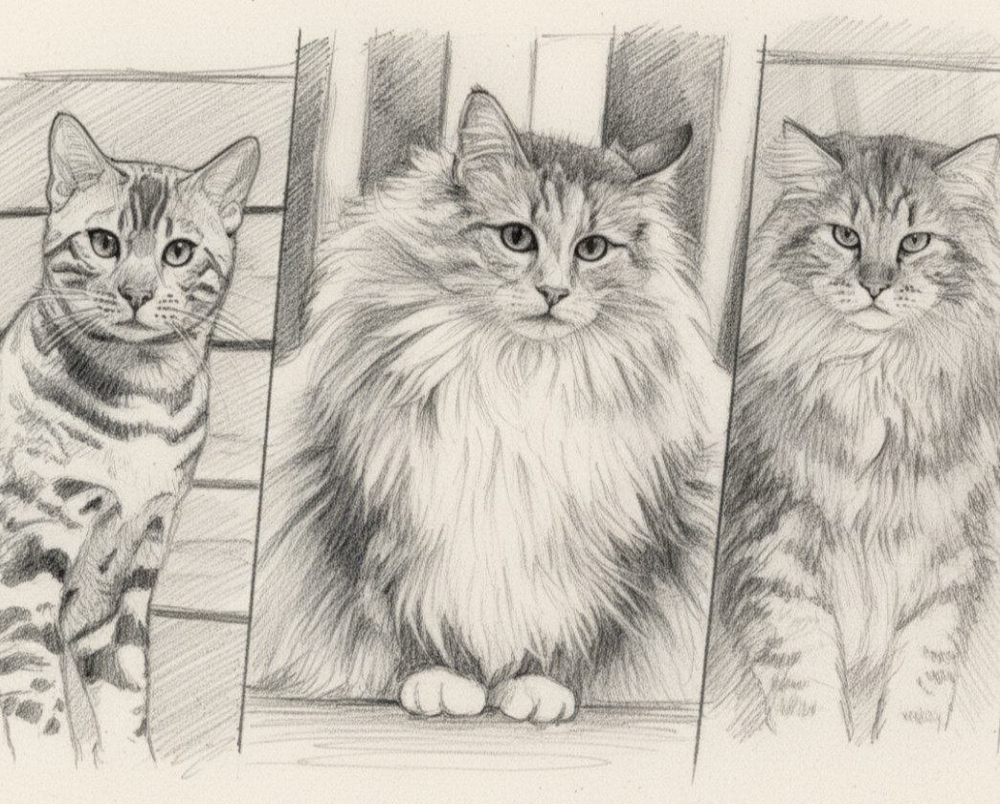
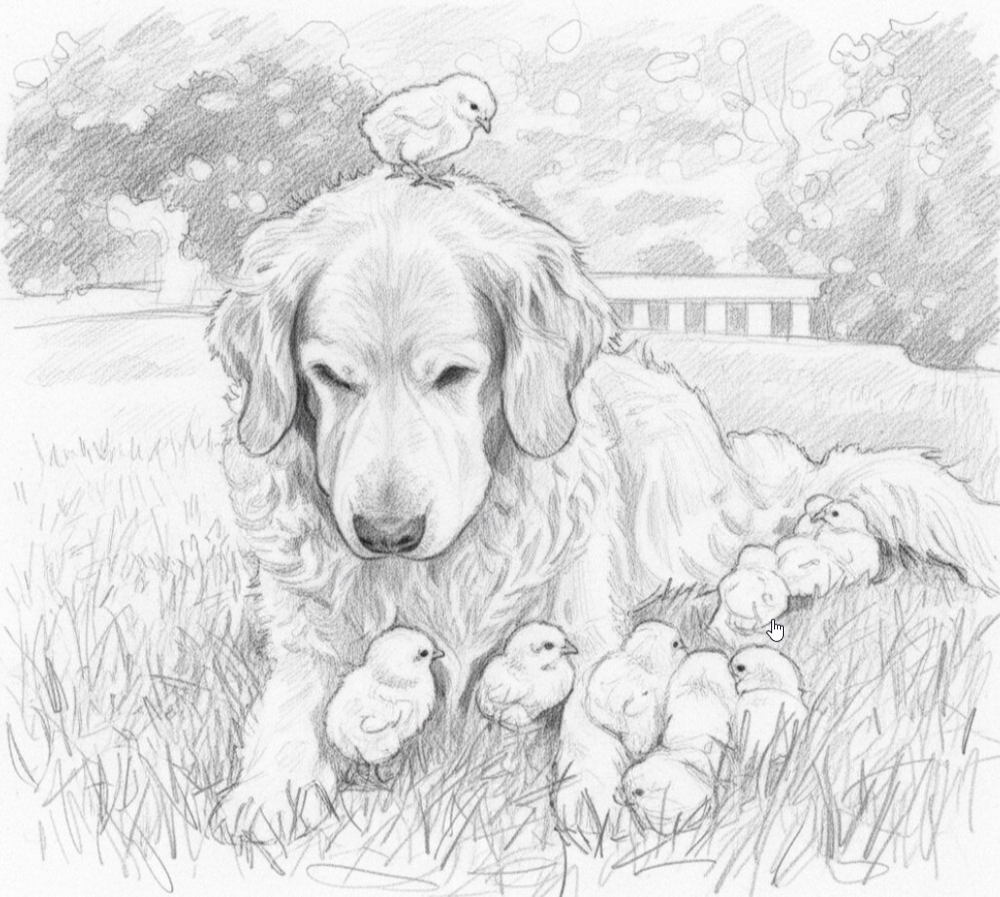
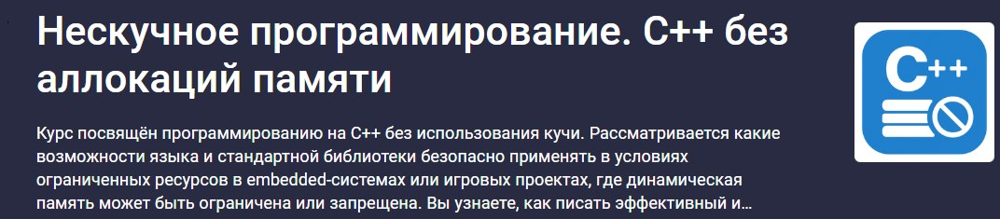

Иногда эволюция создаёт странные решения
CryEngine2 использовал собственный класс CString для работы со строками и немного — строки из стандартной строковой библиотеки Windows. Насколько помню, последняя версия CryEngine всё ещё использует те же CString: внутри он кардинально поменялся, но как дань истории название класса менять не стали, зато сильно расширили функционал. Я не на 100% уверен, применялся ли CString только в редакторе или в рантайме игры тоже — вы можете сами посмотреть в исходниках, которые всё ещё доступны на GitHub. Это один подход к работе со строками, довольно распространённый в мире игростроя: когда мы всё нужное пишем сами, не оглядываясь… хотя тут уместнее слово «поглядывая» на существующие реализации и утаскивая в проект всё самое лучшее.
Есть и другой подход… Я работал в команде над проектом, который должен был выйти на консолях, и в какой-то момент на проект пришёл эффективный тимлид, отлично умевший в красивые презентации, и продавил использование std::string из SDK. Все очень опытные программисты, синьоры и руководство важно кивали на совещании и согласились всё перевести на std::string… не такими уж опытными они оказались, как выяснилось. В итоге мы заменили бо́льшую часть CString на std::string. Не сказал бы, что это сильно повлияло на время компиляции — плюс-минус минута к проекту, который собирается двадцать минут, погоды не делает, но это превратило наш довольно понятный базовый код в запутанный кошмар. Возможно, для переносимости так было лучше, но ни наш проект, ни CryEngine2 Editor так и не были портированы ни на Linux, ни на какую-либо другую платформу.
Прошло десять лет, и я вижу ровно ту же ситуацию на текущем проекте — новый тимлид решил перевести местный MySuperPupeString на std::string. Уже предчувствуя «нижней чуйкой» последствия, запасаюсь попкорном и беру отпуск на следующий месяц после принятия решения. Но интересно не это, а то, какие вообще строки могут быть в вашем C++ коде.
char*
Ритчи возится со строками
Дикий волк с минимальным набором инстинктов — указатель и терминатор '\0', которых ему более чем достаточно для выживания в диких линуксовых степях, андроидных лесах и вообще везде, где есть хоть какое-то подобие процессора. Вначале был BCPL, где типов не было вовсе — первобытный мир, где все данные были одинаковыми зверями, просто кусками памяти без паспортов и социального статуса. В 1969 году Кен Томпсон создал язык B для первой версии UNIX на PDP-7. Он тоже был бестиповым — «C без типов», как его вспомнят позже. А уже в C Ритчи заложил гениальную идею: объявление переменной выглядит так же, как её использование в выражении. Если пишешь char str, то в коде используешь str для получения символа. На тот момент это была не абстракция (так её назовут позже), а прямое отражение того, как работает железо, и особенно память. Поэтому char* — вовсе не «строка», а всего лишь указатель на байт данных в памяти. В этом смысле волк не думает о стаде овец как о массиве — он просто видит первую овцу и знает, что дальше наверняка пасутся ещё. Чтобы понять, где кончается еда… то есть строка, нужно лишь договориться о сигнале. В BCPL использовали длину в первом байте, и Pascal позже подхватил эту идею. Но в C выбрали концепцию '\0' — специального нулевого байта на конце. Так было проще для железа: не нужно хранить лишнюю длину, просто иди по памяти, пока не встретишь ноль. Всё как в дикой природе — волк с собой счётчик овец не носит. Так же и strcpy(), strlen(): бегут по памяти, пока не ткнутся в '\0'.
Особенности содержания — низкая читабельность: ptr++, *str, strcpy(a, b), но зато набор команд минимален и эффективен, как охотничий инстинкт. Синтаксический сахар в виде строковых литералов "hello" и квадратных скобочек str[i] тоже появился не сразу, но всегда можно было обойтись суровой конструкцией (str + i). Нога откусывается максимально быстро: достаточно выйти за границы буфера, забыть терминатор или вставить его «не там» — и почти всегда получаем segfault. Этот волк знает толк в извращениях, но именно на его магии построены целые горы директив препроцессора, макросов стрингификации вроде #define STR(x) #x и даже немалые куски автогенераторов кода.
char[N]
Черепаха быстрая
Когда Деннис Ритчи создавал язык C, у него не было роскоши сложных абстракций — да и роскоши тогда вообще не водилось. Компьютеры PDP-11, на которых собирали первые версии UNIX, имели жалкие килобайты памяти, а malloc появился не сразу. Программисты работали с тем, что было: автоматические переменные на стеке и статические данные в сегменте data считались нормальным рационом. Массив символов char buf[N] был естественным способом хранить строку. Объявили массив — он тут же поселился на стеке: никаких аллокаций, никаких освобождений, никакой драматургии. Это была та самая черепаха — простое и древнее существо, появившееся миллионы лет назад и особо не желающее эволюционировать. Зачем эволюция, если всё и так работает.
В культуре UNIX, где программы были маленькими утилитами, делающими одну вещь хорошо, фиксированные буферы встречались повсюду. Чтение строк из stdin, парсинг конфигурации, обработка временных данных — везде стояли char buffer[BUFFER_SIZE] с магическими числами вроде 80, 256, 1024. Эти числа подбирались опытным путём: так, чтобы обычно хватало, но чтобы стек не взорвался.
Главная магия фиксированных массивов в том, что они живут на стеке. Объявление char buf[N] резервирует байты прямо там и гарантирует, что черепаха всегда дома. Она никуда не путешествует в далёкие земли кучи, где живут шумные и непредсказуемые существа и где память освобождается тогда, когда захочет. Черепаха просто сидит в своём уголке стека, делает свою работу и исчезает, когда функция возвращается. Но даже у черепах есть ограничения — стек конечен (типичный размер от одного до восьми мегабайт на поток), и черепаха может жить только в небольшой коробке. Если коробка нужна слишком большая, придётся идти в дикую степь динамических аллокаций, где живут другие звери, гораздо более нервные и прожорливые.
Этот сюжет напоминает, что в программировании не всегда нужны мудрёные инструменты. Иногда простой массив на стеке решает задачу лучше, чем умная динамическая строка с десятками глянцевых методов. Черепаха никогда не обгонит гепарда, но точно доползёт до финиша — предсказуемо и надёжно. В этом её мудрость и ценность: простота, которая работает уже пятьдесят лет и, как она сама считает, будет работать ещё столько же. Современные программисты иногда смотрят на такие решения с лёгкой улыбкой, полагая, что мир давно шагнул вперёд и пора использовать продвинутые контейнеры, умные строки и автотипы. Но рано или поздно каждый сталкивается с ситуацией, когда нужно что-то маленькое и простое, как кусочек памяти, который живёт ровно столько, сколько живёт функция, и не оставляет за собой хвостов. И тогда появляется тот самый char buf[N], который выглядит как привет из семидесятых и при этом всё ещё идеально подходит для задачи.
char literal
Кто скажет, что это не рыбка?
Самой первой формой строк, которую придумали в языке C, был литерал (строковая константа, строковый литерал, или просто литерал) — просто последовательность символов в двойных кавычках. Написал "hello" в коде — компилятор аккуратно положил эти байты в исполняемый файл, а программа получила указатель на них. Это была рыбка, которая поселилась в стеклянном аквариуме вместе с рождением языка: красивая, плавающая перед глазами, но трогать её руками строго запрещено.
Литералы по своей природе являются константами: они компилируются в executable и помещаются в секцию .rodata, которую операционная система помечает как read-only после загрузки программы. Попытка записать туда что-то вызывает немедленный segfault — рыбка моментально напоминает, что стекло пуленепробиваемое и ломать аквариум не надо.
Одной из ранних оптимизаций компиляторов стал string literal pooling. Если в коде несколько раз встречался одинаковый литерал, компилятор мог создать одну-единственную копию в .rodata, а все указатели направить на неё. Написал "error" в десяти местах — а в бинарнике может оказаться всего один экземпляр. Все рыбки с надписью "error" на самом деле были той же самой рыбкой, которую разные участки программы рассматривали под разными углами. Стандарт это не запрещал, но и не гарантировал, и рассчитывать на то, что два "hello" указывают на один адрес, было занятием для особенно доверчивых романтиков.
Современные компиляторы делают с литералами куда более интересные штуки. Короткие строки могут вообще не попасть в .rodata: компилятор превращает их в набор инструкций, и строка "ab" становится числом, которое загружается в регистр одним движением. Строки средних размеров могут быть собраны прямо на стеке серией mov-инструкций. Только действительно длинные строки живут в .rodata как полноценные аквариумные обитатели и копируются через memcpy.
Литералы живут вечно с точки зрения программы. Они создаются, когда процесс загружается в память, и исчезают только когда процесс завершается. Нельзя освободить память, занимаемую литералом, нельзя переместить её, нельзя изменить — и адрес остаётся фиксированным всю жизнь процесса. Рыбка в аквариуме родилась в момент запуска и будет плавать там до самого конца. Рыбка сама о себе заботится — её не нужно кормить, чистить, пересаживать или размножать.
В 2025 году, спустя пять десятилетий после появления C, литералы остаются фундаментальной частью языка. Они не эволюционировали, как другие строковые типы, а остались такими же прямолинейными, как были. Рыбка в аквариуме не меняется поколениями, но делает своё дело идеально. Плавает за стеклом, радует глаз, ничего не требует и живёт вечно.
std::string (C++03/11)
Собака сутулая, обычная, одна штука
Когда появился C++ и std::string в восьмидесятых, это выглядело как попытка одомашнить дикого волка. Добавили RAII, методы, автоматическое управление памятью — и получилось нечто вроде собаки. Надёжной, удобной, с добрыми глазами, но прожорливой и не такой быстрой в руках опытного охотника. А в руках новичка она легко превращалась в австралийского кролика, который плодится без остановки и захламляет всю память до горизонта.
Бьярн Страуструп, создавая C++, взял C за основу и прикрутил к нему классы, но со строками получилось неловко. Они не вписывались в концепцию языка, и char* остался диким, как был. Программистам он откусывал ноги на полном ходу, устраивал buffer overflow, забытые нулевые байты и прочие радости жизни, присущие дедушке C. В самом языке строки не были оформлены никак: философия C++ предполагала, что язык даёт просто инструменты, а абстракции строят уже сторонние библиотеки. И это было милой ошибкой, ведь базовые сущности всё же должны определяться самим языком, иначе начинается зоопарк.
Зоопарк и начался. Каждая компания писала свою породу String и продвигала её где могла. У Microsoft был CString, у Borland — AnsiString, у Qt — QString, и каждый уверял, что именно его собака сидит правильнее других. Ну и, конечно, совместимость между этими «существами» была примерно как между пуделем и афганской борзой — в принципе можно, но зачем? Проблем стало столько, что Страуструп в ретроспективе истории C++ публично признал отсутствие стандартного строкового типа проблемой, но делать ничего не стал. Тогда сообщество в лице Александра Степанова и Мэн Ли принесло STL — коллекцию контейнеров и алгоритмов, включая basic_string как базу для стандартной строки. Это была революция: строка наконец стала контейнером вроде vector, только с особой семантикой, а не просто кучей данных внутри.
Однако скрещивание домашних и диких пород было уже не остановить, и каждый фреймворк считал своим долгом перещеголять std::string хоть в чём-то, даже если успехи были сомнительными. Тем временем настоящие сишники до сих пор смотрят на std::string как на избалованную декоративную собачку, которой не место в суровой дикой природе, где выживают только сильнейшие — или, может, простейшие?
Читабельность у std::string прекрасная — пока вы не решите открыть реализацию в стандартной библиотеке. Даже простое сложение строк превращается в вызов переопределённого оператора плюс, а если хочется слегка пострелять себе в ногу, то хватает классических проблем с инвалидацией итераторов, внезапной реаллокацией при изменении данных или весёлой и порой непредсказуемой работой SSO — маленьким хвостом, который иногда виляет всей собакой.
std::string_view

Худая собака, три штуки
Радость одомашнивания и приручения волков быстро испортилась одной мелкой неприятностью: собаки начали пухнуть от переедания. К середине 2000-х std::string стал стандартом, но у собаки появилась серьёзная проблема — она слишком любила кушать, а точнее копировать. Каждый раз, когда строку передавали в функцию через const std::string&, существовал риск, что внутри функции кто-нибудь хитрый создаст новую строку из литерала для сравнения и обязательно устроит временную аллокацию. Собаки в очередной раз переедали, и страдала производительность.
bool compare(const std::string& s1, const std::string& s2) {
return s1 == s2;
}
std::string str = "hello";
compare(str, "world"); // Создаёт временный std::string, аллокацияДо появления стандартного string_view сообщество вовсю пыталось вывести породу худых собакенов. Так появился boost::string_ref — ранний пропозал для невладеющих ссылок на строки. Как водится, разные заводчики тут же начали скрещивать своих зверушек и выставлять напоказ: например, absl::string_view в библиотеке Abseil. В Qt завели собственный string_ref и ещё отдельно CoW-строки. Все решали одну и ту же проблему — как бы не копировать, когда нужен только read-only доступ. Это были первые дикие кошки, которых никто толком не приручил, и каждая библиотека вырастила свою породу. В стандарт C++17 кошку наконец пустили официально в виде std::string_view. Она по большей части повторяла бустовскую реализацию. Кошка памятью не владеет вообще — она только смотрит на неё с высоты своей пушистой независимости.
Преимущества кошки вполне очевидны — она не тащит еду домой, а ест там, где нашла. И может есть любую рыбу, на которую покажут пальцем.
std::string str = "this is my input string";
std::string_view sv(&str[11], 2); // "my" — без копирования
void print(std::string_view sv) {
std::cout << sv;
}
print("literal"); // OK
print(std::string("str")); // OK
print(some_char_ptr); // OKКошка string_view пришла в плюсатый дом не затем, чтобы выгнать собаку. Она просто показывает, что иногда владение не нужно и достаточно просто посмотреть. «Просто посмотреть» — это теперь вообще философия C++17: меньше копирования, больше умных view-типов и больше производительности через zero-cost абстракции и мелкие хаки. Синтаксис вполне читабельный, и учебники по современному C++ тоже с радостью гладят эту кошку. Ведь с ней сложнее выстрелить себе в ногу — она не владеет памятью, «каклокаций» не делает и вообще ведёт себя прилично. Но у кошек есть свои выкрутасы: появились специфические проблемы с висячими ссылками, если исходная строка ушла в мир иной. На string_view теперь пишут высокопроизводительный код, хитро организуя время жизни полноценных строк. Но view от этого не стал продлевать жизнь данным — это всё та же кошка, она независима и может уйти в любой момент, оставив вас в одиночестве среди чьей-то памяти.
std::pmr::string
Кто-то слишком много ест
К началу 2010-х std::string была хорошей собакой для большинства задач, но у неё имелась одна маленькая трагедия — она совершенно не умела выбирать, откуда есть. Попытки вывести породу худых собак уже привели к появлению кошек, как было рассказано выше, но требовался другой зверь — тип, который мог бы одинаково ловко работать с разными аллокаторами, не впадая в истерику. Беда в том, что в std::string аллокатор был compile-time параметром. Стоило взять другой аллокатор для обычной строки — и получался новый тип данных, который смотрел на старый код как на дальнего родственника и не признавал его. Это выглядело как собака, приученная есть только из одной миски всю жизнь. А чтобы переключить её на другую миску, например на custom pool allocator в игре, приходилось заводить целую новую породу. Для embedded-систем и игр такая зооферма ещё как-то терпима, но для широкого использования такая экзотика уже не подходила, потому что число типов строк росло быстрее, чем поголовье кроликов весной.
В 2017 году комитет C++ посмотрел на этот питомник и решил, что пора навести порядок. Они взяли proposal расширенных аллокаторов из буста и ввели Polymorphic Memory Resources в стандарт, подарив нам полиморфизм для аллокаторов через виртуальные функции. Пришлось создать новый тип std::pmr::memory_resource как абстрактный базовый класс, но это был уже серьёзный шаг вперёд по сравнению с прежним бардаком из несовместимых типов.
class memory_resource {
public:
void* allocate(size_t bytes, size_t alignment);
void deallocate(void* ptr, size_t bytes, size_t alignment);
bool is_equal(const memory_resource& other) const;
private:
virtual void* do_allocate(size_t, size_t) = 0;
virtual void do_deallocate(void*, size_t, size_t) = 0;
virtual bool do_is_equal(const memory_resource&) const = 0;
};
namespace pmr {
using string = std::basic_string<char, std::char_traits<char>,
polymorphic_allocator<char>>;
}Теперь породистая собака знает свою родословную и может есть из любой миски memory_resource, которую ей выдадут. Правда, она оказалась чуточку медленнее обычной и требует подозрительно много церемоний перед кормёжкой — это немного сказалось на популярности. К 2025 году PMR используют в основном в специализированных областях вроде игр, embedded и HFT, а для обычных приложений старый добрый std::string всё ещё достаточно хорош. Читабельность у pmr::string примерно такая же, просто к ней прилагается небольшой зоопарк производных аллокаторов и шаблонов, зато теперь миски можно менять на лету, и собака не возмущается, если переживёт замену.
QString (Qt)
Попугай — птица умная и разговорчивая
С развитием индустрии софтостроения начали появляться странные и ярко выраженные проблемы использования разных софтверных экосистем, каждая из которых продвигала только свою личную и единственно верную реализацию строк. Чтобы решить очередную проблему очередного «тринадцатого стандарта», в 1991 году норвежская Trolltech решилась на подвиг и начала разработку кроссплатформенного фреймворка Qt. Задача была почти героическая — заставить один и тот же код работать на Windows, Unix X11 и Mac. При этом каждая система имела своё мнение по поводу кодирования символов. Windows использовал UTF-16 через wide-char API. Mac OS тоже предпочитал UTF-16, но уже через свои родные Unicode APIs. Unix и Linux демонстрировали полный творческий хаос — от ASCII и Latin1 до экзотических локалей, которые вспоминали только в полночь. Тогда std::string ещё не существовал, и даже C++98 выглядел как мираж, поэтому появление очередного «четырнадцатого стандарта» универсальной строки было вопросом времени и терпения.
Когда делали Qt 1.0, создатели Хаавард Норд и Эйрик Чамб-Энг решили выбрать UTF-16 как внутреннее представление QString. С технической точки зрения UTF-16 казался лучшим компромиссом: большинство символов занимали всего 2 байта, включая китайские и японские иероглифы, и только редкие emoji и символы исторических письменностей требовали 4 байта. Так попугай выучил самый модный язык на тот момент. В придачу его обучили невероятному количеству слов — toLower, split, startsWith, contains, replace и многим другим. Так попугай получился болтливым и с ответом на каждый случай жизни; даже методы для нормализации, вроде toHtmlEscaped(), позволяли безопасно отправлять его в браузер.
В 1998 году вышел C++98 со своим std::string, и тогда началась эпоха мучительных конверсий туда-сюда — многие уже успели приручить попугая QString и построить для него целые леса скворечников. Попытки подружить его со std::string приводили к созданию временного QByteArray через toUtf8, что выглядело как работа переводчика, переводящего перевод другого перевода. Попугай продолжал гордо говорить на своём UTF-16, когда весь остальной мир стремительно переходил на UTF-8, и это стало настоящей болью для миллионов разработчиков. Они писали на Qt, но вынуждены были иметь дело со std::string, boost и кучей других либ в качестве зависимостей, превращая весь процесс в местный филиал ада.
В 2025 году QString живёт в золотой клетке своей экосистемы, хоть и половина десктопного софта для Linux написана на Qt. В эту клетку входят KDE, VLC, OBS Studio, Telegram Desktop и многие другие. Но надо отметить, что попугай получился красивый, блестящий и прекрасно обученный — вот только выпустить его на волю означает катастрофу. Непонятно только, кого ждёт гибель: попугая или мира вокруг. Многие разработчики считают это наследием 1995 года, которое по инерции тянется в 2025: Qt выбрал кроссплатформенность любой ценой, а цена оказалась экзотической строкой, которая упорно не дружит с остальным C++ миром.
Читабельность у кода отличная, его легко узнаёт любой C++ программист, даже если он Qt никогда не видел (хотя таких уже почти не осталось). Конструкции вроде str.toLower или str.split вообще издалека можно спутать с Python. Вся магия, как обычно в Qt, спрятана глубоко в PImpl и внутри их мета-системы, которая, по слухам, умеет всё. Но каждый раз, когда я пишу очередное приложение на Qt, я снова сталкиваюсь с внешними std::string-подобными библиотеками и вспоминаю ад конверсий как страшный сон.
NSString
Уникальный вид в частном зоопарке
NSString разрабатывался в начале 1990-х, когда общее представление о Unicode только появлялось на свет, но работа над универсальной кодировкой символов началась в середине восьмидесятых с участием крупных технологических компаний, включая Apple и NeXT. Вышедший в октябре 1991 года Unicode 1.0 был шестнадцатибитной кодировкой, и NSString базировался на этой концепции с типом unichar как основной единицей — это стало проблемой позже: обезьяну учили языку, который ещё развивался, и когда язык изменился, она осталась с архаичным диалектом. Хотя концептуально NSString базируется на UTF-16, внутренняя реализация на самом деле зависима от содержимого строки.
NSString задумывался как неизменяемый объект с самого начала; на тот момент решение было вдохновлено функциональным программированием и практиками Smalltalk. Такая неизменяемая строка безопасна для передачи между потоками, для использования как ключ в словарях, для кеширования. Если нужна была изменяемая строка, использовался NSMutableString — другая порода обезьяны из того же зоопарка, что создавало интересную дихотомию: две строки с разным поведением, но общим предком; это ещё более дикая обезьяна, которую можно было дрессировать и менять её поведение.
Одной из самых магических особенностей iMonkey был биндинг данных в CFStringRef. NSString можно было кастовать в CFStringRef и обратно без каких-либо конверсий — это был один и тот же объект в памяти. Это было как если бы обезьяна могла превращаться в собаку из параллельной вселенной C без единого усилия. Но круто было, пока не начинались вопросы о владении памятью: существование объекта в двух вселенных было очень шатким — нужно было точно понимать, кто владеет объектом и в какой момент происходит передача владения данными.
Когда Apple приобрела NeXT, весь NeXTSTEP-стек, включая NSString, стал основой для Mac OS X, а позже iOS. Экзотическая обезьяна из закрытого зоопарка NeXT переехала в ещё более закрытый зоопарк Apple, и вплоть до 2014 года NSString был вездесущим. Каждое приложение на Mac и iPhone использовало его для UI, для работы с файлами, для сетевых запросов, для хранения данных, а поголовье обезьян выросло и заполонило весь зоопарк, вытеснив других животных. Но выпустить её за пределы экосистемы Apple было невозможно: синтаксис Objective-C, зависимость от Cocoa frameworks, подсчёт ссылок и другие ограничения — всё это работало только внутри огороженного сада Apple. NSString был продуктом своего времени, став элегантным решением для эпохи, когда динамизм Smalltalk казался будущим мира разработки, а UTF-16 был разумным выбором, которого хватит всем.
std::wstring
Ошибка эволюции
В начале 1990-х миру софта пришлось думать не только об англоговорящих людях, но и о тех, кто английский учить совсем не хотел, предпочитая видеть родные глифы, иероглифы и точечки над буквами. ASCII с его жалкими 128 символами был безнадёжно мал — ни китайский, ни японский, ни арабский, ни даже латиница в полной красе не помещались. Unicode появился как великое решение, и в первой версии 1991 года был шестнадцатибитной кодировкой: все символы мира должны были уместиться в 65536 позиций. Как говорили мудрые люди того времени, 640 Кб должно было хватить всем.
Когда C++ стандартизировался в 1998 году, комитет включил в стандарт wchar_t для широких символов и std::wstring как строку из них. Идея была гениальна в своей наивности: пусть каждый символ будет шире, чем char, и Unicode поместится без проблем. В этот момент эволюция решила поэкспериментировать и создала утконоса — существо, которое на бумаге выглядело как хорошая идея, а на практике оказалось биологическим парадоксом. Проблема была в том, что стандарт не зафиксировал размер wchar_t, а лишь обещал, что он достаточно велик, чтобы вместить любой символ Unicode. На практике это означало собственную интерпретацию на каждой платформе.
Windows пошла своим путём и выбрала 16 бит, потому что её API базировался на UTF-16, но это были свои, уникальные 16 бит. Linux и Unix решили сделать 32 бита, чтобы быть более универсальными, а MacOS вообще начала отходить от wchar_t в сторону собственной реализации. Получился утконос, который в Австралии откладывал яйца размером 16 бит, в Европе рождал живых детёнышей по 32 бита, а в отдельных зоопарках оставлял кладки по 24 бита. Один и тот же код компилировался на разных платформах и работал совершенно по-разному. sizeof(wchar_t) возвращал 2 на Windows, 4 на Linux и сколько-то на Mac, превращая любые попытки бинарной совместимости в утопическую мечту.
Попытки конвертировать между std::string и std::wstring на Windows превращались в многочасовое путешествие по документации, изучение std::wstring_convert и магию codecvt-фасетов для конверсий между кодировками. Код выглядел довольно просто, но пользоваться им можно было только в очень узких рамках, словно дрессированным утконосом, который умеет плавать, но только в правильной луже.
// UTF-8 строка
std::string utf8 = u8"Привет, мир! 🌍";
// Конвертация UTF-8 -> UTF-16 (std::wstring)
std::wstring_convert<std::codecvt_utf8_utf16<wchar_t>> converter;
std::wstring wide = converter.from_bytes(utf8);
std::wcout << L"UTF-16: " << wide << std::endl;
// Конвертация UTF-16 -> UTF-8
std::string utf8_again = converter.to_bytes(wide);
std::cout << "UTF-8: " << utf8_again << std::endl;Главная причина существования std::wstring была проста — Windows API заняла эту нишу раньше всех и относительно легко диктовала условия разработки софта. Все функции WinAPI для работы с файлами, окнами, реестром, сетью принимали WCHAR*, то есть UTF-16 строки, и до появления std::filesystem в C++17 единственным способом открыть файл с нелатинским именем на Windows было сконвертировать путь в std::wstring и использовать нестандартные расширения компилятора. Второй причиной было легаси: тонны старого кода были написаны в эпоху саблезубых волков, а wchar_t казался будущим. Понятно, что компании не хотели переписывать миллионы строк кода только ради рефакторинга ради рефакторинга, поэтому std::wstring тащился из версии в версию стандарта как пережиток прошлого.
Утконос вымер бы миллионы лет назад, если бы не изолированная экосистема Windstralia, где у него не было конкурентов. Все хотят его забыть и заменить на современные решения, но Windows API не даёт полностью от него отказаться, и легаси-код на wchar_t продолжает жить в корпоративных кодовых базах как ископаемые останки мезозойской эры программирования. Утконос странный, непонятный, никто не может объяснить, зачем природа его создала, но он продолжает существовать в своей изолированной экосистеме как напоминание о ранних годах индустрии.
FrameString
Живёт недолго, но ярко
Игровые движки всегда сталкивались с фундаментальной проблемой производительности и ограниченных ресурсов. Игра, работающая на 60 кадрах в секунду, имела бюджет всего 16,6 миллисекунды на кадр, и в этот микроскопический промежуток времени нужно было обработать физику, AI, анимации, рендеринг и тысячи других задач. Если вы посмотрите на malloc в стандартном std::string, окажется, что он занимает сотни циклов процессора: нужно поискать подходящий блок в куче, возможно, вызвать системный аллокатор — и когда у вас сотни и тысячи мест, где ведётся работа со строками, это становится проблемой.
Debug-сообщения с позициями игроков, UI-лейблы со счётчиками здоровья и патронов, имена particle effects, форматированные логи событий, обращение к свойствам объектов по имени — всё это строки, живущие ровно один кадр. В начале цикла апдейта они создаются, используются, и к концу render они уже не нужны; ещё чаще они используются вообще в одном блоке кода или функции. Но каждая из них вызывает malloc/free, превращая управление памятью в бутылочное горлышко производительности.
Чтобы избавиться от этих накладных расходов, разработчики идут на компромисс и меняют память на скорость. Индустрия обратилась к старой идее из мира системного программирования — линейным аллокаторам. Концепция проста: выделяем один большой блок памяти на старте и раздаём из него кусочки, просто сдвигая указатель. Аллокация превращается в две инструкции — проверку, что места хватает, и инкремент смещения. Никаких поисков по free-листам, никаких вызовов операционной системы и минимальные накладные расходы.
class ArenaAllocator {
char buffer[10 * 1024 * 1024]; // 10 MB
size_t offset = 0;
public:
char* alloc(size_t n) {
char* ptr = buffer + offset;
offset += n;
return ptr; // Мгновенно!
}
void reset() { offset = 0; } // Сброс за O(1)
};Впоследствии многие движки обернули такие аллокаторы в удобные высокоуровневые типы; например, класс String, который принимал framemem_ptr, был одним из них. Снаружи он выглядел как обычная строка с методами append, format, operator+, но под капотом все аллокации шли внутри фрейма.
String debugMsg(framemem_ptr);
debugMsg = "Player position: ";
debugMsg += to_string(x);
debugMsg += ", ";
debugMsg += to_string(y);
// В конце кадра вся память автоматически освобождаетсяНо красота эфемерности несёт смертельную опасность: бабочка-однодневка живёт только один день, и если попытаться сохранить её на завтра, то в руках останется труп. Главной ошибкой с frame memory strings была попытка сохранить указатель на следующий кадр. Компилятор не может это предотвратить, и статический анализ тоже не увидит, если не написать нужные правила. Несмотря на опасности, такие строки стали стандартом в высокопроизводительных движках, потому что скорость важнее всего: их аллокация занимает несколько циклов процессора, когда стандартный malloc занимал несколько сотен, — выбор явно не в пользу std::string и обычных строк.
String(framemem_ptr) — это бабочка-однодневка, потому что её жизнь мимолётна и прекрасна: она рождается в начале кадра, живёт несколько миллисекунд и умирает, когда кадр заканчивается. Её существование эфемерно, но в этой эфемерности есть элегантность, ведь не нужно думать о деструкторах, не нужно вызывать free, не нужно бояться утечек памяти. Опасность в том, что нельзя поймать бабочку и сохранить на завтра.
FString

FString принесёт всё что надо — и что не надо тоже принесёт
В середине 1990-х Тим Суини, основатель Epic Games, был очарован революцией, которую произвёл Quake; эпики взяли эти идеи за основу, но сделали в итоге не просто игру, а полноценный движок для создания игр. В 1998 году вышел Unreal — первый шутер на Unreal Engine первого поколения. Это был золотой стандарт для своего времени: динамическое освещение, продвинутый редактор уровней, скриптовая система UnrealScript. Но технически Unreal Engine был оптимизирован для одной задачи — шутера от первого лица. Вся архитектура, весь networking, весь рендеринг были заточены под коридоры и арены жанра. И строки в движке были утилитарными инструментами для этой цели — имена уровней, названия оружия, debug-сообщения, network packets. Так родился предок FString — простая кастомная строка, не зависевшая от стандартной библиотеки C++. Как обычно, игровые движки контролируют всё сами (от аллокаторов до методов строки), только так можно гарантировать предсказуемое поведение на всех платформах. Это был щенок золотистого ретривера, которого взяли не из питомника стандартной библиотеки, а вырастили сами с нуля.
С каждым поколением Unreal Engine строковая система усложнялась. В Unreal Engine 3 появилась не одна, а три породы строк: FString для изменяемого текста, FName для эффективных сравнений через хеш-таблицу и FText для локализованного UI-текста. FString нравится всем — большая, дружелюбная собака, которая делала всё, что попросишь: конкатенировать строки, форматирование, split по разделителю, ParseIntoArray, Find, Contains, StartsWith, EndsWith и ещё кучу всего. Но ретривер был большим, значительно больше, чем std::string, из-за дополнительных полей для интеграции с движком. Каждая строка несла с собой metadata для reflection-системы, информацию об аллокаторе, возможно, thread-safety флаги — это была плата за универсальность, и при первой встрече ретривер может случайно сбить с ног своим энтузиазмом. Он приносит не только то, что попросили, но и всё остальное — мяч, палку, газету, свою миску, поводок. FString тащит за собой всю инфраструктуру Unreal Engine, и это одновременно его сила и слабость. Если вы внутри движка — это преимущество, и всё работает вместе бесшовно; если вы пытаетесь интегрироваться со сторонними либами — это становится проблемой: нельзя просто взять FString и использовать в другом проекте, он не выживет без своей семьи.
Золотистый ретривер живёт в большом доме Epic Games уже тридцать лет. Он знает каждый угол, каждого члена семьи, каждую команду. Новые щенки могут быть современнее и эффективнее, но у ретривера есть то, чего у них нет — десятилетия опыта работы в AAA играх, миллионы строк проверенного кода, армия разработчиков, которые знают все его причуды. Ретривер, который помог создать Gears of War, Fortnite и другие хиты, точно заслужил своё место у камина, даже если весит слишком много.
StringAtom
Черепаха не только быстрая, но и вечная
В 1960 году Джон Маккарти создал LISP, и одной из фундаментальных концепций языка была работа с символами как атомарными идентификаторами, которые существовали как уникальные сущности. В версии LISP 1.5 1962 года описывалась функция intern, которая либо возвращала существующий символ с заданным именем, либо создавала новый, если такого ещё не было, — и это был момент рождения string interning как концепции.
Символы в LISP были неизменяемы и уникальны по своей природе. Если написать (foo) дважды в коде, оба раза получите ссылку на один и тот же символ в памяти. Сравнение символов в этом случае становится очень быстрым — мы просто сравниваем указатели, потому что одинаковые символы физически были одним объектом. Это была галапагосская черепаха программирования: создавалась медленно через поиск в таблице символов, но потом жила вечно и была уникальна — невозможно было создать дубликат.
Маккарти внёс фундаментальную идею о неизменяемых объектах-идентификаторах: в программах идентификаторы сравниваются тысячи раз, но создаются редко. Имена переменных, функций, классов — всё это известно на этапе написания кода и почти не меняется в рантайме, так зачем сравнивать их посимвольно каждый раз?
Параллельно с развитием LISP создатели компиляторов независимо пришли к той же идее: компилятор должен отслеживать все идентификаторы в программе, и symbol table стала фундаментальной структурой данных, описанной в классической Dragon Book Ахо, Сети и Ульмана.
К 1990-м идея string interning мигрировала и в высокоуровневые языки: так, Java сделала его частью языка — все compile-time строки автоматически интернировались, и программист мог явно вызвать String.intern() для runtime-строк. Scheme, Smalltalk, Julia продолжили традицию LISP с символами как типом. С ростом сложности игровых движков проблема строковых идентификаторов пришла и туда: разные системы требовали быстрого поиска компонентов по имени — например, шейдеры искали параметры по строковым именам, анимации тоже переключались между стейтами по именам. Решением стал StringAtom (или StringID) — обёртка над интернированной строкой: при создании StringAtom("Health") происходил поиск в глобальной hash-таблице, и если "Health" уже была там — возвращался существующий ID или указатель, а если нет — создавалась новая запись, и строка копировалась в вечное хранилище. Дальше все операции со StringAtom были просто сравнением пары чисел.
StringAtom healthTag("Health");
StringAtom manaTag("Mana");
// Сравнение мгновенно - просто ID или pointer equality
if (component.tag == healthTag) {
// ...
}Самой опасной особенностью StringAtom стало его время жизни — фактически вечное. Однажды созданный атом никогда не удалялся, глобальная таблица интернированных строк только растёт. Это было сознательное решение: отслеживание того, когда атом больше не используется, было бы в десятки раз дороже, чем просто держать его в памяти всегда. Это работает отлично, если создаётся разумное количество уникальных атомов. Теги в игре — сотни уникальных имён, параметры шейдеров — тысячи, уникальные строки — ещё несколько тысяч. Всё это умещается в килобайты памяти и живёт до конца программы; популяция галапагосских черепах стабильна — они долго живут, медленно размножаются, и экосистема справляется.
Но если программист по ошибке создаёт StringAtom из пользовательского ввода или уникальных имён в цикле, популяция быстро раздувается до гигабайтов, и погибают все: даже при том что черепахи бессмертны, если их популяция растёт бесконтрольно — остров переполняется и экосистема коллапсирует.
xstring/cow
Это корова
В середине 80-х память была дорогим ресурсом — хорошо, если компьютеры имели мегабайты памяти. Если дорогим ресурсом становится память, то логично искать способы оптимизировать повседневные операции с ней, и одна из идей казалась очевидной — раздельное хранение уникальных строк и указателей на них. Концепция Copy-On-Write пришла из операционных систем, где процессы разделяли страницы памяти до момента модификации: ОС не копировала всё адресное пространство родительского процесса сразу, а только маркировала страницы как shared и копировала их по требованию, когда кто-то пытался писать. Это экономило огромное количество ресурсов и памяти, так почему бы не применить ту же идею к строкам?
Так родилась концепция xstring, или COW string, — строки, где несколько переменных указывают на одни данные, как кролики, живущие в общей норе. Один большой буфер с данными строк и множество владельцев, разделяющих его использование. Счётчик ссылок отслеживает, сколько кроликов живёт в норе, а когда создаём копию строки — просто инкрементируем счётчик вместо аллокации и копирования всего буфера. Кролики экономные — зачем каждому рыть свой тоннель, если можно жить вместе?
К началу 2000-х многоядерные процессоры выявили проблемы COW-строк. Подсчёт ссылок требует атомарных операций: каждое копирование строки — atomic increment, каждое уничтожение — atomic decrement. С учётом того, что атомарные операции на порядки дороже обычных инкрементов, это приводит к некоторым проблемам при работе с такими строками. Особенно плохо становится в многопоточном коде, где строки часто передаются между потоками, — тут атомарный подсчёт ссылок становится горячей точкой и проблемой, а не решением. Кролики путаются, когда их слишком много бегает по норе одновременно: сталкиваются в узких тоннелях и мешают друг другу.
Читабельность обычная — те же методы, что у std::string. Использование стреляет через неожиданные паттерны, когда модификация триггерит дорогое копирование всех данных — ложное или ошибочное копирование данных. Кролик мирный, пока в норе достаточно места и тихо, но как только начинаешь его двигать — быстро прыгает в сторону и роет новое жильё.
StringID
Тогда же, в начале 2000-х, игровые движки столкнулись с другой фундаментальной проблемой — идентификацией уникальных данных: взрывной рост числа используемых ресурсов (текстуры, модели, звуки, анимации) привёл к тому, что существующие системы хранения на обычных строках не справлялись. Тут ещё развитие скриптования и моддинга добавило свою бочку дёгтя в ложку мёда, насыпав неуникальных разделяемых строк (когда два мода имели одинаковые строки, но шарить их было нельзя), логики, имён, систем. Везде были строковые сравнения, и везде они были узким местом производительности.
StringAtom частично решал эту проблему через интернирование, но требовал поиска по таблице и памяти для хранения всех уникальных строк навсегда, а std::string сравнивался медленно через strcmp, поэтому нужно было что-то радикально другое — способ превратить строку в число на этапе компиляции, но иметь возможность сделать то же самое и в рантайме, оставив только число. В 2007 году появилась статья, которая формализовала подход, до сих пор используемый в большинстве AAA студий. Идея была проста до гениальности: захешировать строку через CRC32 и получить uint32_t, использовать это число как уникальный ID. Строка "PlayerHealth" превращалась в 0x8F4A23B1, и компилятор вообще не включал оригинальную строку в исполняемый файл — гепард начинал бегать, и бегать очень быстро.
constexpr uint32_t operator""_sid(const char* str, size_t len) {
return FNV1a(str);
}
constexpr uint32_t damageEvent = "DamageEvent"_sid;Теперь строки — это числа, но программист продолжает видеть в коде текст, понимает, что происходит, а компилятор генерирует только число. И это был идеальный баланс: код остаётся понятным людям, но оптимален для машины. Одной из киллер-фич StringID была возможность использовать строковые идентификаторы в switch-выражениях. Обычно C++ не позволяет switch по строкам, потому что они не могут быть представлены в виде числа, но хеши строк — это compile-time константы, поэтому такой код будет работать.
switch(messageType) {
case "PlayerDied"_sid:
handlePlayerDeath();
break;
case "EnemySpawned"_sid:
handleEnemySpawn();
break;
}StringID нашёл свою нишу везде, где нужны были быстрые строковые идентификаторы, известные во время компиляции, — например, в Event IDs, именах ресурсов, компонентах и переменных шейдеров; системы рефлексии используют StringID вместо полных строк. Везде, где строка была идентификатором, а не данными, гепард оказывается эффективнее любого другого животного в саванне, но гепард умеет только быстро бегать и ничего больше.
StringID занимает своё место в экосистеме строк как специализированная форма для идентификаторов — не для обработки текста, не для пользовательского ввода или хранения данных. Только для быстрой работы с известными именами, которые сравниваются часто и должны быть максимально простыми.
std::string().append()
Мы никуда не денемся от std::string как стандарта. Он встроен во всё вокруг, и полностью игнорировать его просто невозможно — бо́льшая часть экосистемы C++ так или иначе ожидает именно std::string. В любой крупной кодовой базе он всё равно будет просачиваться в интерфейсы, и бороться с этим бессмысленно. Да, он не идеален, но его сила в том, что он обеспечивает совместимость, предсказуемость поведения и минимальную когнитивную нагрузку для всех, кто читает и пишет код.
Но и зацикливаться только на std::string, как будто это единственно возможное представление строки, тоже вредно. Внутри движка, на горячих колстеках, чувствительных к выделениям памяти, можно и нужно использовать другие решения: small-string оптимизации, арен-аллокаторы, string_view, собственные строковые буферы или вообще фиксированные массивы. Если знать, где именно нужны альтернативы, можно получить огромный выигрыш в производительности и управляемости кода — и при этом не ломать интеграцию со стандартными компонентами.
Отдельное спасибо моему другу Саше Васильеву за предоставленные рисунки и художественную обработку.
Если вам интересно услышать про реализацию xstring в игровых движках, приходите на вебинар — там будут не менее увлекательные доклады от Андрея Карпова и Дениса Ярошевского.
И заходите на мой курс «Нескучное программирование» — попробуем вернуть немного магии в разработку на плюсах. Промокод как обычно HABR50.

← Все статьи